Tasca: Instal·lació RAID amb sistema operatiu
La pràctica es farà amb una màquina Debian nova amb 2GiB de RAM.
La màquina tindrà en total 4 discos de 20 GiB cadascú.
Hem de crear un RAID10 durant la instal·lació del sistema operatiu i, a sobre d'ell, un LVM amb els següents paràmetres:
- / de 10GiB
- /home de 5GiB
- swap de 1GiB
* Tingues en compte que el RAID s'haurà de fer amb les particions /dev/sda1, /dev/sdb1, /dev/sdc1, /dev/sdd1 per preservar espai per al MBR.
* S'haurà de copiar el MBR a tots els discos.
Preguntes:
1. Durant la instal·lació, fes una captura de pantalla quan tinguins fetes les particions, el RAID i el LVM.
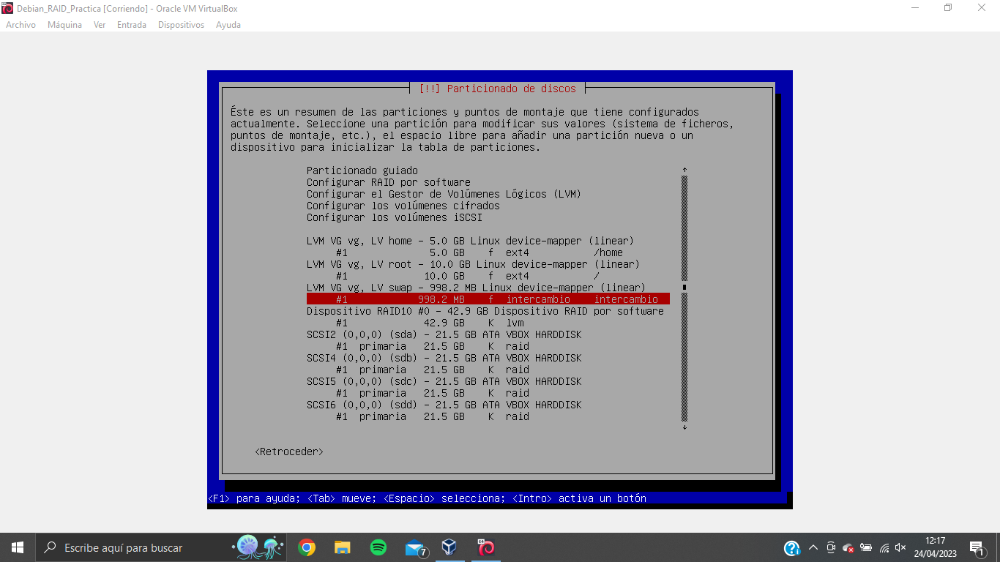
2. Un cop instal·lat, mostra las sortides de les següents comandes:
lsblk
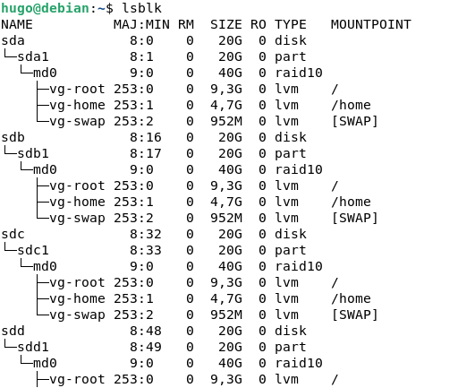
cat /proc/mdstat
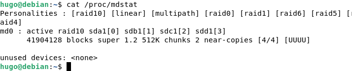
df -h
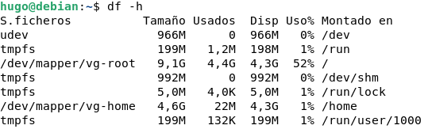
3. Apaguem la màquina i treiem el primer disc. Arrenca la màquina? Explica per què.
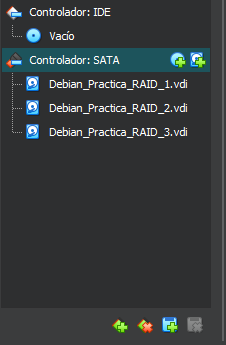
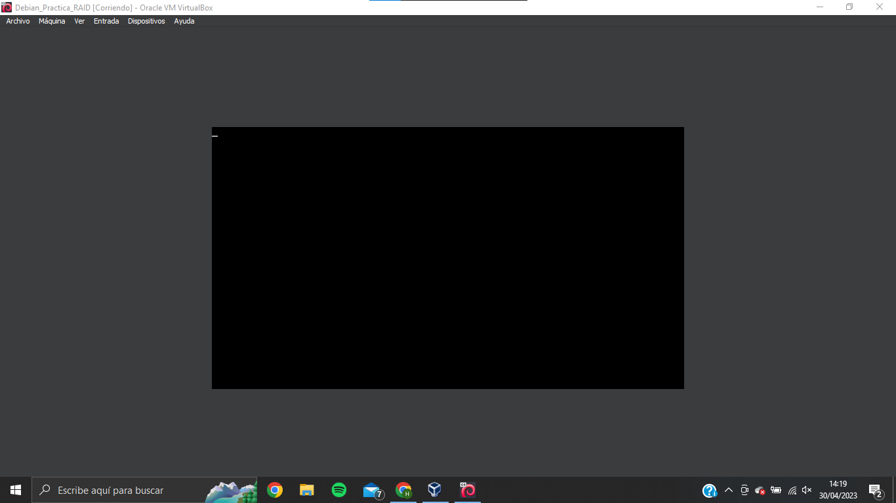
No funciona perquè hem retirat un dels disc que forma part del RAID 0.
En un RAID 10 al dividir-se en dos conjunts de discos, es requereix la presència de tots els discos.
4. Torna a posar el resultat de les comandes:
lsblk
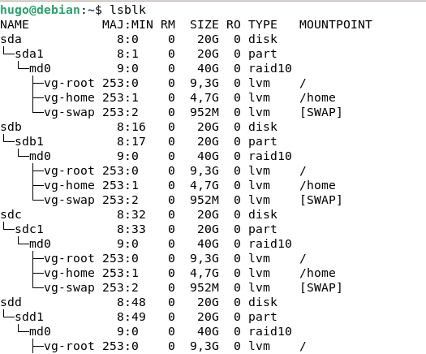
cat /proc/mdstat
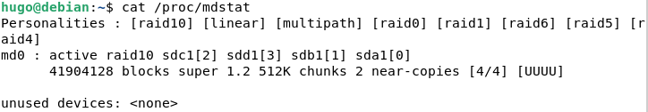
df -h
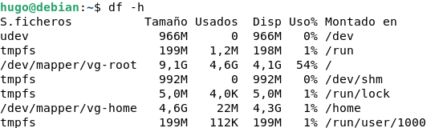
sudo fdisk -l /dev/md0
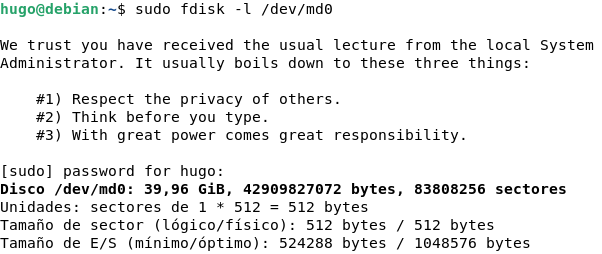
5. Torna a apagar i posa un disc nou de 20GiB i arrenca. Què has de fer perquè arrenqui tenint el nou disc?
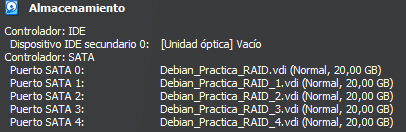
6. El disc que has afegit s'ha inclòs automàticament al RAID10? Mostra-ho.
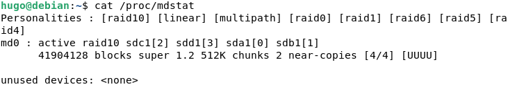
No està inclòs encara.
En cas negatiu, inclou el nou disc al RAID10.
Posa les captures de pantalla del què has fet per aconseguir-lo. (Inclou el contigut de /proc/mdstat).
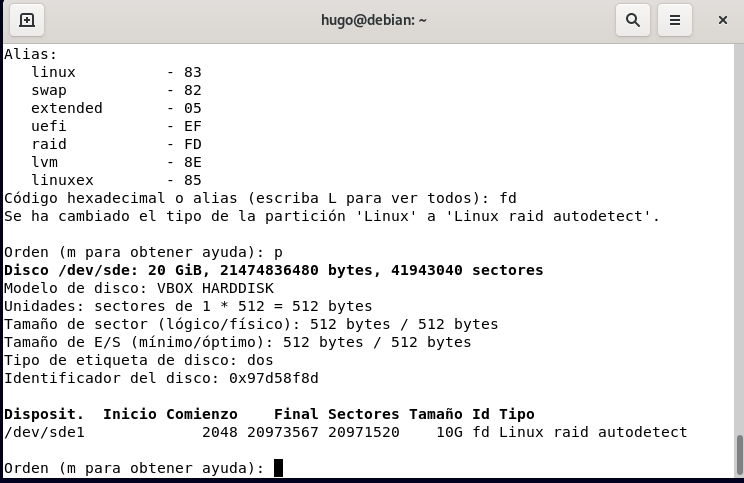
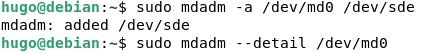
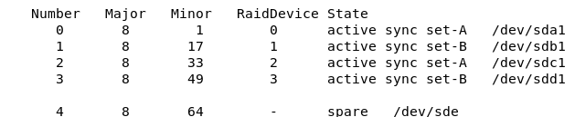
7. Apaga la màquina i torna a posar el primer disc que has tret. El RAID10 utilitza aquest disc? Mostra el seu estat dins del RAID10.
8. Força per software una fallada al primer disc. Mostra com reacciona el sistema segons la sortida de /proc/mdstat. Explica què està passant.
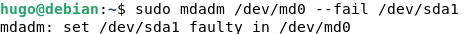
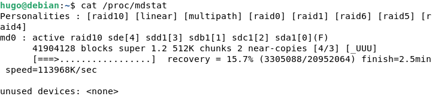
Ha iniciat un procés de reconstrucció amb els altres discos del raid
9. Reinicia l'ordinador i prova que tot funciona correctament.
Amplia /home amb 2GiB més. Mostra com ho has fet i quin resultat has obtingut.
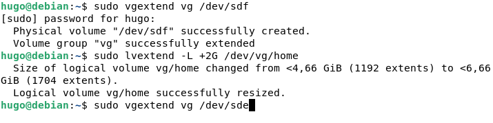